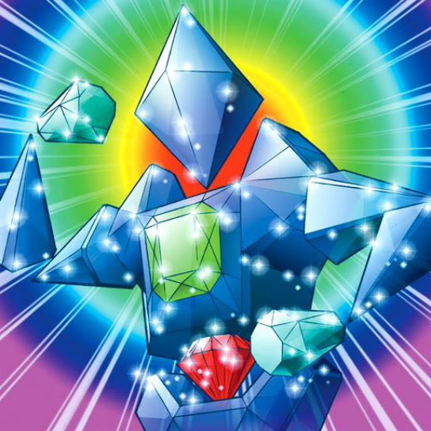

Prisman

Description: "When this card is flipped face-up, all your SPELL cards are flipped face-down."
STATS
ATK: 800
DEF: 1000DECK COST
Deck Cost per Card: 23EFFECT NOT IMPLEMENTED
Fusion List (11 Possible Fusions)
- Prisman + Doron = Minomushi Warrior
- Prisman + Fire Eye = Dissolverock
- Prisman + Flame Snake = Dissolverock
- Prisman + Hibikime = Mystical Sand
- Prisman + Hyo = Minomushi Warrior
- Prisman + Mech Mole Zombie = Stone Ghost
- Prisman + Petit Dragon = Stone D.
- Prisman + Queen's Double = Mystical Sand
- Prisman + Serpentine Princess = Bracchio-raidus
- Prisman + Thunder Nyan Nyan = Mystical Sand
- Prisman + Waterdragon Fairy = Mystical Sand